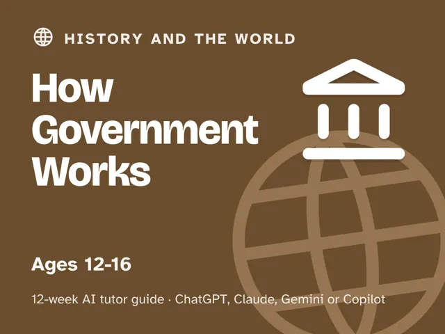
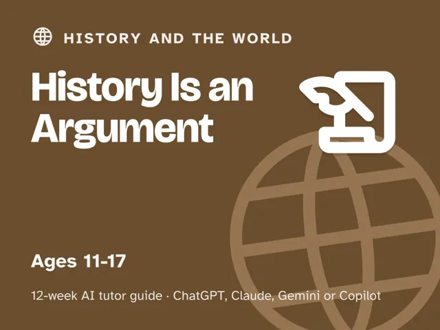

Guides / History and the world
History Is an Argument
$29Instant download: a PDF to read, a browser copy, and the AI-tutor file you hand straight to any AI assistant.Buy it on Etsy →
Take the free placement check first: 15 minutes, and it names the week to start at.
History taught as dates to memorize produces boredom. History taught as inquiry (claims, sources, and arguments about why things happened) produces thinkers. This 12-week plan turns an AI tutor into a debate partner and source-finder (never an encyclopedia to copy from), and builds one core habit: every claim gets the question "how do we know that?"
What you get
This is a deep, ready-to-run digital guide: 12 weekly ~60-minute sessions, fully scripted so you lead with confidence. No history degree, no AI experience, and almost no prep: a notebook, plus a relative to ask (week 2) and an old household object (week 9). - 12 weekly sessions, each with a plain-language concept, a concrete worked example, a minute-by-minute session plan for the full ~60 minutes with the AI-tutor prompts built in (each launch prompt sets the AI up as a debate partner, not an encyclopedia), a "show me" checkpoint, common mistakes to avoid, and independent practice. - "Never used an AI chat assistant? Start here": a five-minute onboarding in the front matter that gets a complete beginner from zero to ready, using any free AI assistant. No paid plan needed. - Four rescue prompts in the front matter for when a session goes sideways: an overwhelmed or stuck learner, an AI that starts handing over the conclusion, a bored learner, and a quick check that they really understand (not just repeating the AI). - A Socratic tutor built into every session that pushes for evidence, plus a guardrail against handing over answers to copy.
The 12 weeks
- How Do We Know Anything?
- Your Family Is History
- Maps Lie (a Little)
- The Question of Why
- Ordinary People
- Propaganda and Spin
- Turning Points
- Whose Story Gets Told?
- Objects Talk
- Project Week I: Choose Your Case
- Project Week II: Investigate
- Present the Case
Who it's for
Parents and teachers guiding a learner aged roughly 11–17 who thinks history is memorizing dates. No history degree required: you pick the topics that matter to your family; the tutor supplies the sparring and the sources.
Why this instead of a free chatbot
Ask a chatbot a history question and you get a paragraph to copy. This pack refuses that: the tutor is set up as a debate partner that demands evidence, the weekly arc builds real source-reading and argument skills, and the guardrail blocks the copying shortcut. Critical thinking by design, not by accident.
FAQ
- Do I need to know the history myself? No. You choose topics you care about; the tutor finds sources and argues both sides while the learner does the thinking.
- Which AI does it use? What if I've never used one? Works with any modern AI assistant: ChatGPT, Claude, Copilot, or Gemini. Free versions are enough; no paid plan needed. The guide's first section walks complete beginners through setup in about five minutes, so never having used an AI chat assistant before is not a barrier.
- How much time does this take? You lead one ~60-minute session each week. Every step is timed and written out for you. No expertise or extra prep needed.
- Is my child's data collected? The guide itself collects nothing. It's a digital guide sold to you, the adult: no login, no child account. You run and supervise every session under your own AI account, and the guide tells you to share only a first name and age in chats.
- What ages? Roughly 11–17.
- Does it work outside the US? Yes. The guide is written in US English, and every prompt tells the AI to use your country or region (given, inferred, or asked) for spelling, units, money, school terms, and examples, and to favor history your learner would recognize.
- Refunds? Standard marketplace refund policy applies.
$29Instant download: a PDF to read, a browser copy, and the AI-tutor file you hand straight to any AI assistant.Buy it on Etsy →